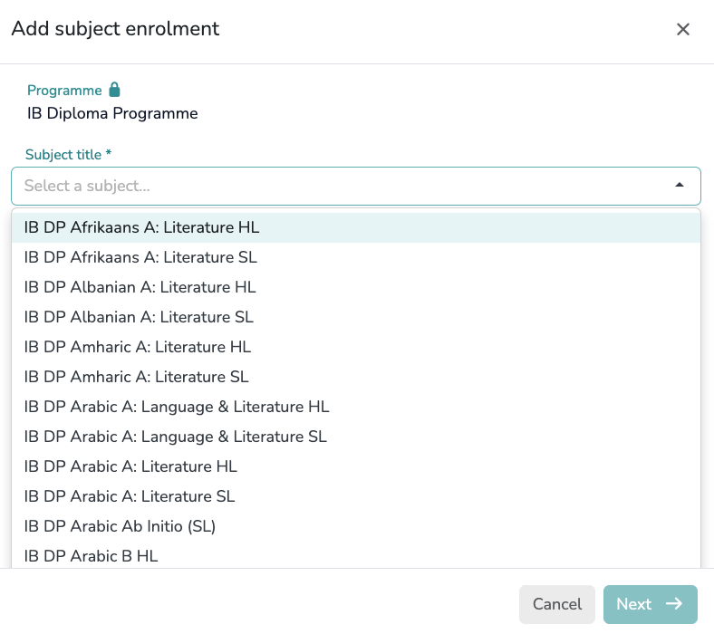
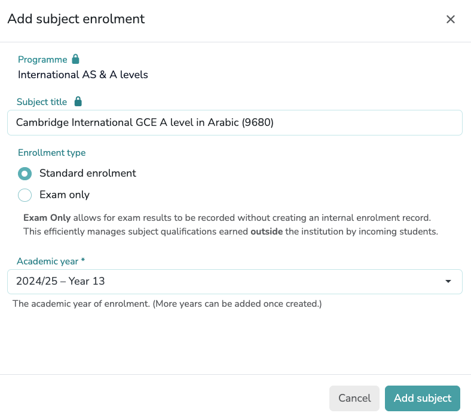

The Student Setup Guide
Student Registration Process
graph LR
A([Add Student]) --> B[Edit Profile]
subgraph Setup [Profile Details]
B -.-> C(Personal Data)
B -.-> D(Guardians)
B -.-> E(Permanent Tags)
end
subgraph Enrolment [Enrolment Process]
B --> F(Academic Year)
F --> G(Programme)
G --> H(Subjects)
end
C & D & E & H --- Z((Done))
style Z fill:#fafafa,stroke:#bbb,stroke-width:1px,stroke-dasharray: 5 5
style Setup fill:#f9f9f9,stroke:#eee,stroke-dasharray: 2 2
style Enrolment fill:#fff,stroke:#eeeAdd student
{kind=link}
Click the Add student button to begin the registration process. Enter the student's First Name and Last Name into the corresponding form to create the record. You may also provide their Gender, Date of Birth, and Email Address as optional fields.
Edit profile
- Personal data: This section allows you to review and update the student's core information previously entered during registration.
- Guardians: This section allows you to register one or multiple guardians by providing their Full Name and Email Address.
Assign a guardian to the student to enable progress report sharing
- Permanent group tags: Assign one or multiple permanent group tags to the student. Tags assigned here are permanent and will apply across all enrolment years. Their use enables student group analysis for insights based on demographics or specific cohorts.
Group tags must be previously created in Setup > Students > Tags, clicking the Group tags button
Enrolment Process
{kind=link}
-
Academic Years: Click on
+ Enrolto associate the student with a specific Academic Year. This step is required to activate the student's record for the current cycle and enables their inclusion in specific year groups.Student must be enrolled in an Academic Year before assigning a Programme
Review before saving
Please ensure the Academic Year and Year Group are correct. These fields cannot be modified once the enrolment is created.
Annual Group Tags
You can assign one or multiple tags to a student for a specific academic year. Unlike permanent tags, these are used to group students for academic purposes that may change from year to year.
Learner Statuses (Flags)
Assign one or multiple specific educational profiles to the student. These "flags" allow teachers and Data Managers to immediately identify and support specific student needs:
- SEN (Special Educational Needs): The student has a learning difficulty or disability that requires special educational provision.
- EAL (English as an Additional Language): The student's first language is not English and they may need support to access the curriculum.
- LA (Low Attainer): The student is currently struggling to achieve the minimum expected academic standards for their level.
- G&T (Gifted & Talented): The student demonstrates high ability in one or more academic, creative, or practical areas.
- MP (Mobile Pupil): The student has joined the school outside the standard admission cycle or intake times.
- OAGC (Out of Age Group Cohort): The student is not in the expected year group based on their chronological age.
-
Academic Enrolments: Select
+ Add programmeto assign the student to a programme and enable subject enrolment.Add Programme
Within the form, you can select the most appropriate program for each student from the following options, organized by educational level:
Final Secondary (KS5)
- IB Diploma Programme
- GCE AS & A levels
- Level 3 Extended Project Qualifications
- International AS & A levels
- International Project Qualifications
- Other Pre-university (KS5) Programmes
Upper Secondary (KS4)
- IB Middle Years Programme (Years 4–5)
- GCSEs
- Level 1 & 2 Project Qualifications
- International GCSEs
- O Levels
Lower Secondary (KS3)
- International Lower Secondary Programme
-
Subjects: Locate the specific Programme section and click its corresponding
+ Add subjectbutton.

Step 1: Selection
Use the dropdown in the first form to select the required subject. Each option in the list is a unique entry that already includes its specific Examination Board and Curriculum System (e.g., Cambridge, Pearson/Edexcel, Oxford/AQA, or International Baccalaureate). ClickNextto proceed.Step 2: Configuration
In the final form, select the Academic Year and the Enrolment Type:Enrolment Types
- Standard Enrolment: For students following the regular internal course.
- Exam Only: This option allows exam results to be recorded without creating an internal enrolment record. It is an efficient way to manage subject qualifications earned outside the institution by incoming students.
Multi-Year Enrolment
Multiple academic years can be assigned to a single subject. This is useful when a subject spans two years or if a student requires additional time to complete the course.
Finalizing the Profile
After completing all sections—including Personal Data, Guardians, Group Tags, and Enrolments—you must click the
Donebutton to save and synchronize the entire student record.
{kind=link}
{kind=link}
Group tags
Click the Group tags button to create the specific tags required for your school. You can select one or multiple tags from the provided list or add your own custom labels. The standard categories include:
Educational Needs
- EAL: English as an Additional Language.
- G&T / GIFTED: Gifted and Talented students.
- IEP: Individualized Education Program.
- SEN: Special Educational Needs.
Other Demographics
- MOBILE: Mobile Pupil (students joining outside the standard admission cycle).
- OAGC: Out of Age Group Cohort.
Global Tags Setup
Setting up these Group Tags in Setup > Students > Tags ensures they are available as dropdown options when editing individual student profiles later.
Student registration guidelines
GCE AS & A-Level
“Integrating linear subject tracking with a completed AS-Level and independent research certification.”
| Subject title | Enrolled in |
|---|---|
| GCE AS & A levels | |
| AQA Level 3 Advanced GCE in Physics (7408) | 2025/26 – Year 13 2024/25 – Year 12 |
| AQA Level 3 Advanced GCE in Spanish (7692) | Exam only |
| OCR Level 3 Advanced GCE in Computer Science (H446) | 2025/26 – Year 13 2024/25 – Year 12 |
| Pearson Edexcel Level 3 Advanced GCE in Mathematics (9MA0) | 2025/26 – Year 13 2024/25 – Year 12 |
| Pearson Edexcel Level 3 Advanced Subsidiary GCE in Further Mathematics (8FM0) | 2024/25 – Year 12 |
| Level 3 Extended Project Qualifications | |
| Pearson Edexcel Level 3 Extended Project Qualification | 2025/26 – Year 13 |
Linear Subjects
For linear subjects all grades recorded in the application (Internal and Expected) refer to the entire qualification. Since there is only one final exam, the system compares all grades against each other and against a single Final Exam Grade. This allows the application to track the student's overall progress and calculate the Value-Added provided by the school.
International AS & A levels
“A comprehensive summary of international curricula: combining CIE, OxfordAQA, and Pearson Edexcel.”
| Subject title | Enrolled in |
|---|---|
| International AS & A levels | |
| Cambridge International GCE A level in Media (9607) | 2025/26 – Year 13 |
| Cambridge International GCE AS level in Media (9607) | 2024/25 – Year 12 |
| OxfordAQA International A level in Economics (9640) | 2025/26 – Year 13 |
| OxfordAQA International AS level in Economics (9640) | 2024/25 – Year 12 |
| Pearson Edexcel International A level in Mathematics (YMA01) | 2025/26 – Year 13 |
| Pearson Edexcel International AS level in Mathematics (XMA01) | 2024/25 – Year 12 |
| Pearson Edexcel International AS level in Further Mathematics (XFM01) | 2024/25 – Year 12 |
| Cambridge International GCE A level in Law (9084) | Exam only |
| Cambridge International GCE AS level in Law (9084) | Exam only |
| International Project Qualifications | |
| Cambridge International Project Qualification | 2025/26 – Year 13 |
Staged linear & modular Subjects
Staged Linear and Modular systems both utilize two distinct qualification grades —the AS and the A Level— allowing the application to track progress and calculate Value-Added across both milestones.
International Baccalaureate (IB) Diploma
“Recording a full IB Diploma profile using numerical grading (1-7), HL/SL distinctions, and Core (A–E) components.”
| Subject title | Enrolled in |
|---|---|
| IB Diploma Programme | |
| IB DP English A: Lang & Lit HL (Group 1) | 2025/26 – Grade 12 2024/25 – Grade 11 |
| IB DP Geography HL (Group 3) | 2025/26 – Grade 12 2024/25 – Grade 11 |
| IB DP Biology SL (Group 4) | 2025/26 – Grade 12 2024/25 – Grade 11 |
| IB DP Mathematics: Analysis and Approaches HL (Group 5) | 2025/26 – Grade 12 2024/25 – Grade 11 |
| IB Core Components | |
| IB DP Theory of Knowledge (TOK) | 2025/26 – Grade 12 2024/25 – Grade 11 |
| IB DP Extended Essay (EE) | 2025/26 – Grade 12 2024/25 – Grade 11 |
| IB DP Creativity, Activity, Service (CAS) | 2025/26 – Grade 12 2024/25 – Grade 11 |